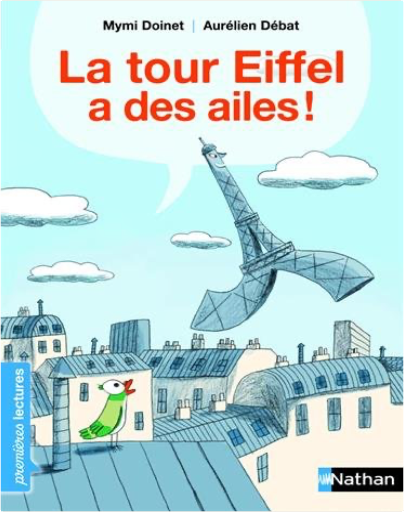
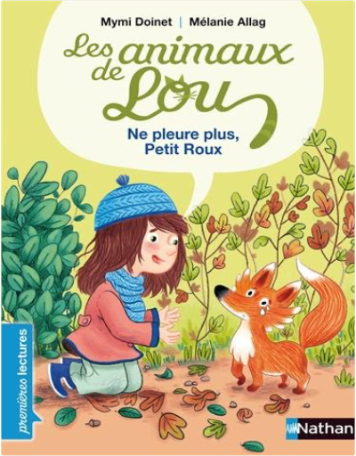
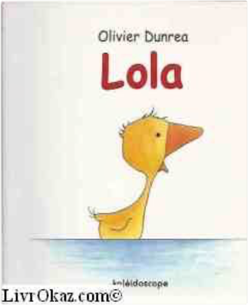

Books
Movies
Albums
Videogames
Games
BD
BD Camille
Blu-ray
Business
Camille
Comics
Cooking
Lego
Manga
Pauline
Photography
Sport
Star Wars
T'choupi
Travel
TV Shows
Un livre dont vous êtes le héro
Vinyl
Walt Disney
2
3
4
5
6
un amour de petite soeur
astrid desbordes, pauline martin
verte
marie desplechin
bijoux de princesses, tome 2 - la couronne d'aurore
walt disney
winnie l'ourson, mes premières histoires
walt disney
l'histoire de la vie, du big-bang jusqu'à toi
p'tits docs
les docs de lou : tout sur les chevaux
mymi doinet

la tour eiffel a des ailes !
mymi doinet
les animaux de lou - courage, petit marin !
mymi doinet

les animaux de lou - ne pleure plus, petit roux !
mymi doinet
les animaux de lou - tu es chou, petit chat !
mymi doinet
les aventures d'anouk et benji - un cheval si génial
mymi doinet

lola
olivier dunrea
2
3
4
5
6


 Made with Delicious Library Made with Delicious Library
Made with Delicious Library Made with Delicious Library